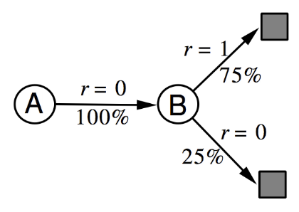

Introduction to Reinforcement Learning
4 - Model-Free Prediction
Introduction
Model-Free Prediction: this is when we have a problem, but we are not given an MDP
and we still want to solve it. There are several methods that can be used:
Monte-Carlo means we follow a trajectory of states until the end and estimates
a value by looking at the samples. Another family method is Temporal-Difference learning,
which can be significantly more efficient. It only looks one step ahead. These methods
are at each end of a spectrum, and they can be combined in different ways, which we
call the TD(λ) approach.
Status on where we are:
- Last lecture. Planning by dynamic programming: Solve a known MDP
- This lecture. Model-Free prediction: estimate the value function of an unknown
MDP
- Next lecture. Model-free control: optimize the value function of an unknown
MDP
By 'solving' we mean finding the optimal behaviour in that MDP that maximizes the reward
from any state. But it was a known MDP; where we know the dynamics and rewards which allows
us to find the value function. We saw how to compare policies and in turn find the optimal
policy.
In model-free methods we do something similar: but now we give up on this major assumption that
we know how an environment works (which is usually the case). Instead we go directly from the
experience of the agent to a value function, and hence, a policy. Just like we did for DP
we break it into two parts: first to evaluate policies, and then to solve for the optimal
policy. The challenge is to do it without knowing the model (MDP).
Monte-Carlo Learning
Figuring out how the "world" works is quite straight forward, and MC methods are unefficient
but still effective (it does solve many problems, but slowly) method and is widely used in
practice. It learns from episodes of experience (so random, iterative search). MC learns
from complete episodes (running a game to termination); with no bootstrapping. If we start
in some state, run an episode and get 5, then start again and rerun and get 7, we simply
calculate the mean and estimate the value to be 6. Caveat: only apply MC to
episodic
MDPs where the episodes terminate.
Going into more detail. The
goal is to learn v
π from episodes
of experience under policy π.
$$
S_1,A_1,R_2,\ldots,S_k\sim \pi
$$
We are trying to learn the value function, expected future return, from any state.
We look at the reward we get from each timestep and onwards. The return is the total
discounted reward:
$$
G_t = R_{t+1} + \gamma R_{t+2} + \ldots + \gamma^{T-1}R_T
$$
Recall that the value function is the expected return:
$$
v_\pi(s) = E_\pi[G_t\mid S_t = s].
$$
So, from any state, we are going to estimate the value function by calculating the mean of
all returns to termination from that particular state. MC evaluation uses
empirical mean
return instead of
expedted. There are two general approaches.
First Visit Monte-Carlo Policy evaluation.
To evaluate state s (in some loop). The
first time-step t that state s is visited in an episode:
- We increment some counter: N(s) ← N(s) + 1
- We increment total return: S(s) ← S(s) + Gt
- The value is estimated by mean return: V(s) = S(s)/N(s)
- By law of large numbers: V(s)→vπ as N(s)→∞
To get an accurate estimate, we need to do many simulations. The procedure is only done
the first time we visit a state. Any subsequent visits to the state after the first visit
are ignored.
Every Visit Monte-Carlo Policy evaluation.
A subtly different approach. For
every t that state s is visited in an episode:
- We increment some counter: N(s) ← N(s) + 1
- We increment total return: S(s) ← S(s) + Gt
- The value is estimated by mean return: V(s) = S(s)/N(s)
- By law of large numbers: V(s)→vπ as N(s)→∞
There are different cases where each might work better.
Incremental mean: the mean μ
1, μ
2, ... of a sequence
x
1, x
2, ... can be computed incrementally:
$$
\begin{align*}
\mu_k &= \frac{1}{k}\sum_{j=1}^k x_j \\
&\\
&= \frac{1}{k}\bigg(x_k + \sum_{j=1}^{k-1}x_j\bigg) \\
&\\
&= \frac{1}{k}(x_k + (k-1)\mu_{k-1}) \\
&\\
&= \frac{1}{k}(x_k + k\mu_{k-1}-\mu_{k-1}) \\
&\\
&= \mu_{k-1} + \frac{1}{k}(x_k - \mu_{k-1})
\end{align*}
$$
Even though many things in the environment affects the value, we don't need to know
them explicitly. We just need to calculate their effects. This is the power of RL!
The incremental calculations means that we can calculate things on the fly. An interesting
interpretation is that when we compare x
k to μ
k-1 we are looking
at what happened, versus what we think the mean is, then we shrink this with 1/k, and then
we add it to the current previous μ
k-1. So when we calculate μ
k, we
are updating it in the direction of the error we found. This idea will be repeated, and
every algorithm in this lecture will take this form.
For the incremental Monte-Carlo updates: we update V(s) incrementally after episode
S
1, A
1, R
2, ..., S
T. For each state S
t
with return G
t:
$$
\begin{align*}
N(S_t) &= N(S_t) + 1 \\
&\\
V(S_t) &= V(S_t) + \frac{1}{N(S_t)}\Big(G_t - V(S_t)\Big)
\end{align*}
$$
We don't need to keep track of the value between episodes, just the visit counts. Every
time we see the state, we see the "error" of what we thought the error would be, and
correct the value a little bit in the direction of the error - just like we saw earlier.
In non-stationary problems, it can be useful to track a running mean, i.e. forget old
episodes.
$$
V(S_t) \leftarrow V(S_t) + \alpha\Big(G_t - V(S_t)\Big)
$$
(In real world examples, we don't want to care about very old information)
Temporal-Difference Learning
Here we break up episodes and use incomplete returns: Temporal-Difference (TD).
TD methods learn directly from episodes of experience, not from given information
about the environment. It is
model-free. The main difference is that we learn
from
incomplete episodes, by
bootstrapping. TD does not rely on terminating states.
In this case bootstrapping means substituting the remainder of the trajectory with an estimate
of what will happen from that point onwards. In a sense, TD updates a guess towards a guess.
Comparing TD and MC
The common goal is to learn v
π online from experience under policy π.
Incremental every-visit Monte-Carlo: we update value V(S
t) toward the actual
return
Gt.
$$
V(S_t) \leftarrow V(S_t) + \alpha\Big(\color{red}G_t\color{black} - V(S_t)\Big)
$$
In the simplest temporal-difference learning algorithm: TD(0): we update value
V(S
t) toward
estimated return
Rt+1 + γV(St+1):
$$
V(S_t) \leftarrow V(S_t) + \alpha\Big(\color{red}R_{t+1} + \gamma V(S_{t+1})\color{black} - V(S_t)\Big)
$$
- $R_{t+1} + \gamma V(S_{t+1})$ is called the TD target
- $\delta_t = R_{t+1} + \gamma V(S_{t+1}) - V(S_t)$ is called the TD error
In TD we are updating the value towards the immediate reward, and the discounted value of the
next step. In TD we replace the real return with our estimate of the reward.
Advantages and Disadvantages of MC vs. TD
- TD can learn before knowing the final outcome
- TD learns online after every step
- MC must wait until the end of an episode before return is known
- TD can learn without the final outcome
- TD can learn from incomplete sequences
- MC can only earn from complete
- TD works in continuing (non-terminating) environments
- MC only works for episodic (terminating) environments
The Bias/Variance Trade-off
The return used in MC,
$$
G_t = R_{t+1} + \gamma R_{t+2} + \ldots + \gamma^{T-1}R_T
$$
is an
unbiased estimate of v
π. The true TD target
$$
R_{t+1} + \gamma v_\pi(S_{t+1})
$$
is an
unbiased estimate of v
π(S
t). (We see this
from the Bellman equation).
The TD target, which is used in practice,
$$
R_{t+1} + \gamma V(S_{t+1})
$$
is a
biased estimate of v
π(S
t). The V is based on an
estimate, which is where we introduce the bias.
The benefit, is that we reduce the variance: TD target is much lower variance than the return:
- Return depends on many random actions, transitions and rewards.
(See expression for Gt above)
- TD target depends on one random action, transition and reward
Further summary of the advantages/disadvantages:
- MC has high variance, zero bias
- Good convergence properties
- (Even with function approximation)
- Not very sensitive to initial value
- Very simple to understand and use
- TD has low variance, some bias
- Usually more efficient than MC
- TD(0) converges to $v_\pi(s)$
- (But not always with function approximation)
- More sensitive to initial value
Batch MC and TD
As we have established, both MC and td converge: V(s)→v
π(s)
as experience →∞. But what about batch solution for finite experience?
Would they find the same solution?
$$
\begin{align*}
&s_1^1, a_1^1, r_2^1, \ldots, s_{T_1}^1 \\
&\quad\vdots \\
&s_1^K, a_1^K, r_2^K, \ldots, s_{T_1}^K
\end{align*}
$$
(That is, we repeatedly sample espides k∈[1, K]). We can compare them in a simple
example. There are two states A, B, no discounting and 8 episodes of experience.
| A,0,B,0 |
| B, 1 |
| B, 1 |
| B, 1 |
| B, 1 |
| B, 1 |
| B, 1 |
| B, 0 |
What is V(A) and what is V(B)?
I think V(A) = 0 for both MC and TD. In MC we update the value of V(B) once everything
is ended, so I'm guessing V(B) = 1. For TD we sum up and take an average, so V(B) = 6/8 = 3/4?
(But I don't think this is correct! :))
Answer:
Both TD and MC will assign 3/4 to V(B). The difference is what V(A) is.

In all the episodes starting from A, we go to B and get a reward of 0. From B, 75% of the
transitions gave a reward of 1, and 25% a reward of 0. This MDP gives the best description
(the ML estimate) of the observed data.
MC converges to solution with minimum mean-squared error. Best fit to the observed returns:
$$
\sum_{k=1}^K\sum_{t=1}^{T_k}\Big(g_t^k - V(s_t^k)\Big)^2,
$$
which in the example corresponds to V(A) = 0.
TD(0) converges to solution of max likelihood Markov model. The solution to the
MDP ⟨𝓢, 𝓐, 𝓟, 𝓡, 𝛾⟩ (where 𝓟 and 𝓡 are estimates):
$$
\hat{\mc{P}}_{s,s'}^a =
\frac{1}{N(s,a)}\sum_{k=1}^K\sum_{t=1}^{T_k}\bs{1}(s_t^k,a_t^k, s_{t+1}^k = s,a,s')
$$
$$
\hat{\mc{R}}_{s}^a =
\frac{1}{N(s,a)}\sum_{k=1}^K\sum_{t=1}^{T_k}\bs{1}(s_t^k,a_t^k = s,a)r_t^k,
$$
which in the example corresponds to V(A) = 0.75. The probability is simply counting
all episodes that go from s to s' and divide by the number of visits to s. And
the reward is the average observed reward.
The third kind of Advantage/Disadvantage.
- TD exploits Markov property
- Usually more efficient in Markov environments
- MC does not exploit Markov property
- Usually more efficient in non-Markov environments
TD(λ)